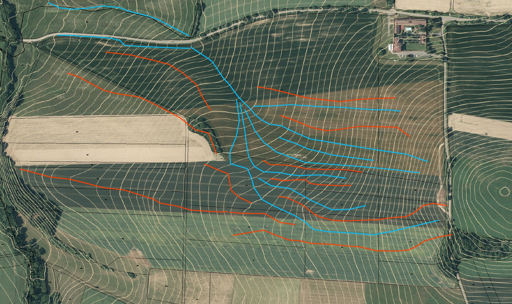
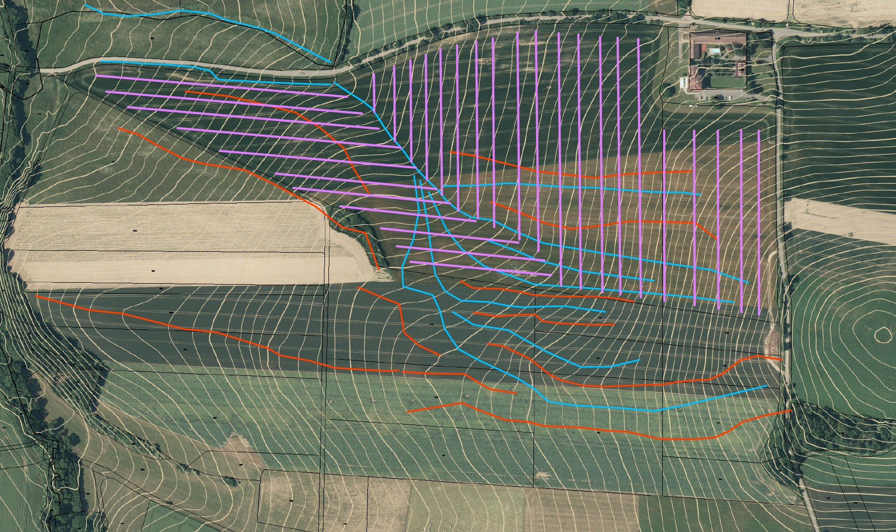
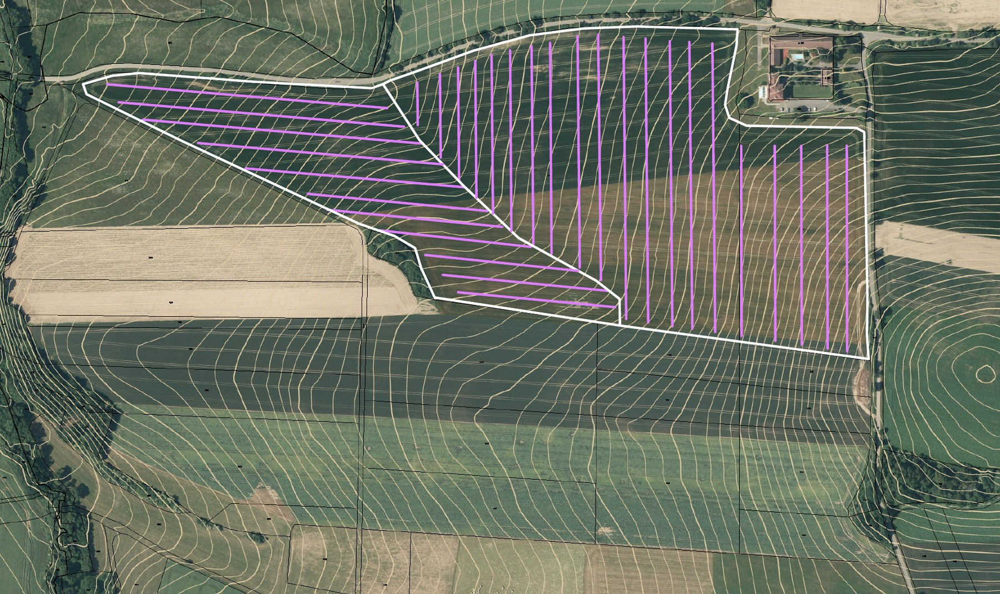
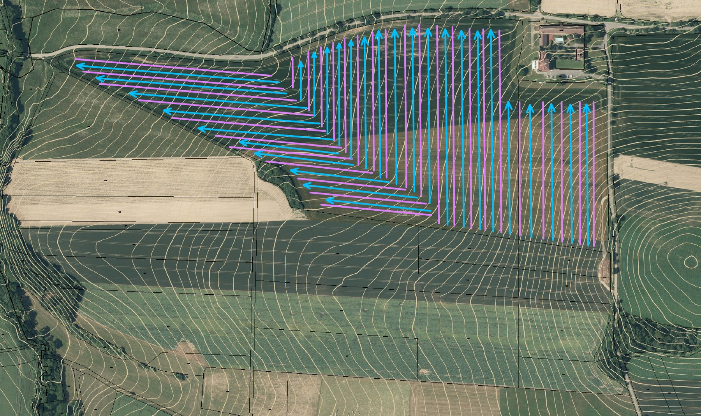

Návrh agrolesnického systému
Návrh rozmístění stromů a keřů ve vztahu k produkci, pastvě, mechanizaci, mikroklimatu, erozi, vodě a budoucí péči. Silvoorebné, silvopastorální i kombinované systémy.
Agrolesnické systémy • poradenství • regenerativní krajina
Navrhuji agrolesnické systémy pro zemědělce a vlastníky půdy. Pomáhám propojit produkci, půdu, vodu, biodiverzitu a ekonomiku hospodaření do funkčního celku.
Služby
Nezačínám počtem stromů. Začínám cílem hospodaření, půdou, reliéfem, vodou, technikou, zvířaty, odbytem a tím, kolik péče má systém dlouhodobě vyžadovat.
Návrh rozmístění stromů a keřů ve vztahu k produkci, pastvě, mechanizaci, mikroklimatu, erozi, vodě a budoucí péči. Silvoorebné, silvopastorální i kombinované systémy.
Konzultace nad konkrétním podnikem nebo půdním blokem: volba systému, dřevin, sponu, ochrany výsadby, následné péče i návaznosti na běžný provoz farmy.
Pomoc s orientací v aktuálních podmínkách podpory agrolesnictví, přípravou projektu a potřebných podkladů. Cílem je, aby dotační pravidla podporovala dobrý systém, ne jej určovala.
Pohled na pozemek v souvislostech: infiltrace, odtok, eroze, cesty, vegetace, organická hmota a možnosti, jak prodloužit dobu, po kterou voda v krajině zůstává.
Přístup
V návrzích mě zajímají principy, které pomáhají krajině lépe hospodařit s energií, vodou a živinami — a zároveň zůstávají použitelné pro člověka, který na místě skutečně hospodaří.
Záměrné propojení dřevin se zemědělskou produkcí. Strom může být produkčním prvkem, větrolamem, zdrojem stínu, krmiva či biomasy a současně strukturou podporující půdu a biodiverzitu.
Přístup pracující s vysokou druhovou rozmanitostí, sukcesí, vrstvami vegetace a intenzivním managementem biomasy. Inspiruje mě důraz na vývoj systému v čase a využití přirozené dynamiky rostlin.
Keyline design vychází z detailního čtení reliéfu a pohybu vody. Pomáhá hledat rozmístění cest, výsadeb, zásobních prvků a způsobů obdělávání tak, aby se podpořila infiltrace a omezil rychlý odtok.
Vícepatrové systémy trvalých rostlin napodobují některé principy lesa, ale jsou cíleně vedené k produkci pro člověka. Důležitý je vývoj v čase, práce se světlem a postupné zaplňování ekologických nik.
Keyline design
Keyline design je systém navrhování, který se snaží zpomalit odtok vody z krajiny a zasakovat ji rovnoměrně v celé ploše pomocí minimálních úprav. Mnohdy stačí jen překreslit tvar půdních bloků a změnit směr pojezdu zemědělských strojů.
Kliknutím na mapu ji lze otevřít ve větší velikosti.
Ve vrstevnicové mapě zmapujeme hřebeny a údolí, což nám ukáže cestu vody.

Navrhneme linie pojezdu tak, aby rozváděly vodu mírně z kopce do co nejširší plochy.

Nové půdní bloky — nebo jen změny směru pojezdů.

Nový směr pojezdů, jejich zhutnění, koleje a rýhy po příslušenství směřují vodu do plochy.
Inspirace
Příklady z různých míst a období, které ukazují, jak lze spojovat produkci, vodu, půdu, vegetaci a práci člověka do promyšleného celku. Postupně sem budu přidávat další inspirace.
Chinampas jsou tradiční mezoamerické produkční plochy budované v mělkém jezerním a mokřadním prostředí, oddělené kanály. Fascinuje mě na nich těsné propojení vody, úrodné půdy, mikroklimatu, dopravy a intenzivní produkce. Nejde o model k prostému kopírování do Česka, ale o výborný příklad systémového přemýšlení.

O mně
Jmenuji se Vilém Kerouš. Jsem certifikovaný poradce podle schématu ADVIGREEN a věnuji se návrhům agrolesnických systémů, poradenství pro zemědělce a regenerativnímu pohledu na hospodaření s půdou a krajinou.
Téměř dvacet let sbírám praktické zkušenosti na vlastním pozemku o rozloze 1,3 ha s hliněným domkem, kde postupně a sukcesně buduji jedlý les. Dříve jsem se sedm let věnoval návrhům a realizacím zahrad a tři roky budování květinové farmy. Absolvoval jsem úplný kurz permakulturního designu.
Současně získávám zkušenosti při budování regenerativní Farmy Štamberk, kde se propojují nosnice, skot, polní výroba a agrolesnictví. Zajímají mě také syntropické systémy, biodiverzita, půdní život, biouhel, houby a kompostování.
Přednášky a vzdělávání
Nabízím přednášku pro obce, zemědělce, školy, spolky i veřejnost zaměřenou na fungování vody v krajině a na praktické způsoby, jak zpomalovat odtok a podporovat vsakování.
Přednášku stavím na názorných příkladech z různých částí světa: agrolesnictví, terasy, mokřady, svejly, keyline design, práce s půdní strukturou, vegetací a organickou hmotou i historické systémy typu chinampas.
Domluvit přednášku →Kontakt
Napište nebo zavolejte. Pro první rozhovor stačí stručně popsat lokalitu, výměru, současné využití a to, čeho chcete na pozemku dosáhnout.